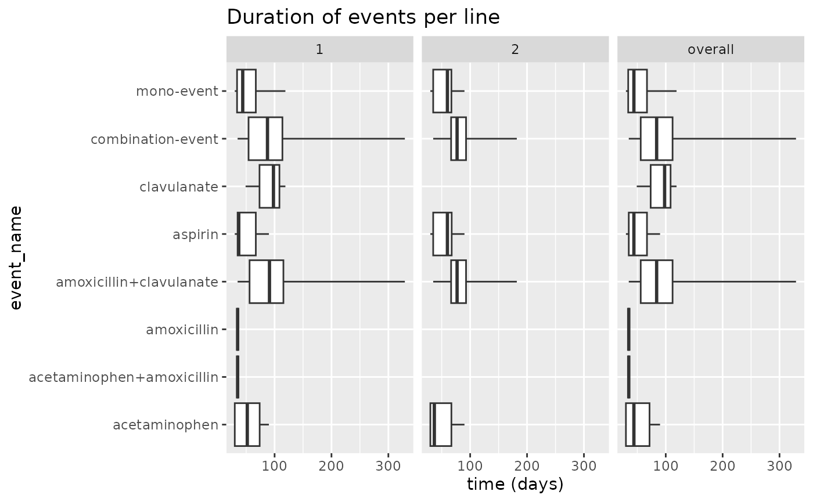

Computing Treatment Pathways
Source:vignettes/articles/ComputingTreatmentPathways.Rmd
ComputingTreatmentPathways.RmdIn 1. Defining Cohorts we discussed how to define
and generate cohorts for TreatmentPatterns. In this section
we assume you are able to generate a cohort table using either
CohortGenerator or CDMConnector.
Lets generate our Viral Sinusitis dummy cohorts provided in
TreatmentPatterns using CDMConnector.
Generating Cohorts
First we need to read in our cohorts.
library(CDMConnector)
cohortSet <- readCohortSet(
path = system.file(package = "TreatmentPatterns", "exampleCohorts")
)
cohortSet## # A tibble: 8 × 5
## cohort_definition_id cohort_name cohort json cohort_name_snakecase
## <int> <chr> <list> <list> <chr>
## 1 1 acetaminophen <named list> <chr> acetaminophen
## 2 2 amoxicillin <named list> <chr> amoxicillin
## 3 3 aspirin <named list> <chr> aspirin
## 4 4 clavulanate <named list> <chr> clavulanate
## 5 5 death <named list> <chr> death
## 6 6 doxylamine <named list> <chr> doxylamine
## 7 7 penicillinv <named list> <chr> penicillinv
## 8 8 viralsinusitis <named list> <chr> viralsinusitisThen we can open a connection to our database, in this case Eunomia.
##
## Attaching package: 'Eunomia'## The following object is masked from 'package:CDMConnector':
##
## downloadEunomiaData##
## Download completed!
con <- DBI::dbConnect(
drv = duckdb::duckdb(),
dbdir = eunomiaDir()
)## Creating CDM database /tmp/RtmpRnHkiA/file2e463824787a/GiBleed_5.3.zip
cdm <- cdmFromCon(
con = con,
cdmSchema = "main",
writeSchema = "main"
)
cdm##
## ── # OMOP CDM reference (duckdb) of Synthea ────────────────────────────────────
## • omop tables: person, observation_period, visit_occurrence, visit_detail,
## condition_occurrence, drug_exposure, procedure_occurrence, device_exposure,
## measurement, observation, death, note, note_nlp, specimen, fact_relationship,
## location, care_site, provider, payer_plan_period, cost, drug_era, dose_era,
## condition_era, metadata, cdm_source, concept, vocabulary, domain,
## concept_class, concept_relationship, relationship, concept_synonym,
## concept_ancestor, source_to_concept_map, drug_strength
## • cohort tables: -
## • achilles tables: -
## • other tables: -Finally we can generate our cohort set as a cohort table into the database
cdm <- generateCohortSet(
cdm = cdm,
cohortSet = cohortSet,
name = "cohort_table",
overwrite = TRUE
)## ℹ Generating 8 cohorts## ℹ Generating cohort (1/8) - acetaminophen## ✔ Generating cohort (1/8) - acetaminophen [389ms]## ## ℹ Generating cohort (2/8) - amoxicillin## ✔ Generating cohort (2/8) - amoxicillin [224ms]## ## ℹ Generating cohort (3/8) - aspirin## ✔ Generating cohort (3/8) - aspirin [173ms]## ## ℹ Generating cohort (4/8) - clavulanate## ✔ Generating cohort (4/8) - clavulanate [160ms]## ## ℹ Generating cohort (5/8) - death## ✔ Generating cohort (5/8) - death [134ms]## ## ℹ Generating cohort (6/8) - doxylamine## ✔ Generating cohort (6/8) - doxylamine [156ms]## ## ℹ Generating cohort (7/8) - penicillinv## ✔ Generating cohort (7/8) - penicillinv [157ms]## ## ℹ Generating cohort (8/8) - viralsinusitis## ✔ Generating cohort (8/8) - viralsinusitis [246ms]##
cohortCount(cdm$cohort_table)## # A tibble: 8 × 3
## cohort_definition_id number_records number_subjects
## <int> <int> <int>
## 1 1 2679 2679
## 2 2 2130 2130
## 3 3 1927 1927
## 4 4 2021 2021
## 5 5 0 0
## 6 6 1393 1393
## 7 7 1732 1732
## 8 8 2159 2159We can see that all our cohorts are generated in the cohort table. The cohort with cohort_definition_id 5 has a count of 0, this is the Death cohort. This is not detrimental, as exit cohorts are optional, but good to know that Death will not show up in our results.
Computing pathways
The computePathways function of
TreatmentPatterns allows us to compute treatment pathways
in our cohort table. In order to do this we need to pre-specify some
parameters.
According to the documentation we need a data.frame that
specifies what cohort is of which type.
Data frame containing the following columns and data types:
cohortId numeric(1) Cohort ID’s of the cohorts to be used in the cohort table.
cohortName character(1) Cohort names of the cohorts to be used in the cohort table.
type character(1) [“target”, “event’,”exit”] Cohort type, describing if the cohort is a target, event, or exit cohort
We are able to re-use our cohortSet for this. As it
already contains the cohort ID’s and cohort names. We only have to
remove the cohort and json columns, add a
type column, and rename cohort_definition_id
to cohortId and cohort_name to
cohortName.
library(dplyr)
cohorts <- cohortSet %>%
# Remove 'cohort' and 'json' columns
select(-"cohort", -"json", -"cohort_name_snakecase") %>%
mutate(type = c("event", "event", "event", "event", "exit", "event", "event", "target")) %>%
rename(
cohortId = "cohort_definition_id",
cohortName = "cohort_name",
)
cohorts## # A tibble: 8 × 3
## cohortId cohortName type
## <int> <chr> <chr>
## 1 1 acetaminophen event
## 2 2 amoxicillin event
## 3 3 aspirin event
## 4 4 clavulanate event
## 5 5 death exit
## 6 6 doxylamine event
## 7 7 penicillinv event
## 8 8 viralsinusitis targetWith our data.frame of cohort types, CDM reference, and
the cohort table name in our database we can compute the treatment
pathways, with all of the other settings as their defaults.
library(TreatmentPatterns)
defaultSettings <- computePathways(
cohorts = cohorts,
cohortTableName = "cohort_table",
cdm = cdm
)## -- Qualifying records for cohort definitions: 1, 2, 3, 4, 5, 6, 7, 8
## Records: 14041
## Subjects: 2693## -- Removing records < minEraDuration (0)
## Records: 11386
## Subjects: 2159## >> Starting on target: 8 (viralsinusitis)## -- Removing events where index date < target index date + indexDateOffset (0)
## Records: 8366
## Subjects: 2144## -- splitEventCohorts
## Records: 8366
## Subjects: 2144## -- Collapsing eras, eraCollapse (30)
## Records: 8366
## Subjects: 2144## -- Iteration 1: minPostCombinationDuration (30), combinatinoWindow (30)
## Records: 558
## Subjects: 512## -- Iteration 2: minPostCombinationDuration (30), combinatinoWindow (30)
## Records: 554
## Subjects: 512## -- After Combination
## Records: 554
## Subjects: 512## -- filterTreatments (First)
## Records: 553
## Subjects: 512## -- treatment construction done
## Records: 553
## Subjects: 512
defaultSettings## # Andromeda object
## # Physical location: /tmp/RtmpRnHkiA/file2e46731486ac.sqlite
##
## Tables:
## $addRowsFRFS_1 (personId, indexYear, eventCohortId, eventStartDate, eventEndDate, type, age, sex, targetCohortId, durationEra, row_person, sortOrder, gapPrevious, selectedRows, switch, combinationFRFS, combinationLRFS, eventStartDateNext, eventEndDatePrevious, eventEndDateNext, eventCohortIdPrevious)
## $addRowsFRFS_2 (personId, indexYear, eventCohortId, targetCohortId, eventStartDate, age, sex, eventEndDate, durationEra, gapPrevious, sortOrder, selectedRows, switch, combinationFRFS, combinationLRFS, eventStartDateNext, eventEndDatePrevious, eventEndDateNext, eventCohortIdPrevious)
## $addRowsLRFS_1 (personId, indexYear, eventCohortId, eventStartDate, eventEndDate, type, age, sex, targetCohortId, durationEra, row_person, sortOrder, gapPrevious, selectedRows, switch, combinationFRFS, combinationLRFS, eventStartDateNext, eventEndDatePrevious, eventEndDateNext, eventCohortIdPrevious, checkDuration)
## $addRowsLRFS_2 (personId, indexYear, eventCohortId, targetCohortId, eventStartDate, age, sex, eventEndDate, durationEra, gapPrevious, sortOrder, selectedRows, switch, combinationFRFS, combinationLRFS, eventStartDateNext, eventEndDatePrevious, eventEndDateNext, eventCohortIdPrevious, checkDuration)
## $analyses (analysis_id, description)
## $arguments (analysis_id, arguments)
## $attrition (number_records, number_subjects, reason_id, reason, time_stamp)
## $cdm_source_info (cdm_source_name, cdm_source_abbreviation, cdm_holder, source_description, source_documentation_reference, cdm_etl_reference, source_release_date, cdm_release_date, cdm_version, vocabulary_version)
## $cohortTable (cohortId, personId, subject_id_origin, startDate, endDate, age, sex)
## $cohortTable_8 (cohortIdEvent, personId, subject_id_origin, startDateEvent, endDateEvent, ageEvent, sexEvent, typeEvent, cohortIdTarget, startDateTarget, endDateTarget, ageTarget, sexTarget, typeTarget, indexYear, indexDate)
## $cohorts (cohortId, cohortName, type)
## $currentCohorts (cohortId, personId, subject_id_origin, startDate, endDate, age, sex)
## $dbplyr_1WRZorR1u5 (number_records, number_subjects, reason_id, reason, time_stamp)
## $dbplyr_5pWJOAFS8a (number_records, number_subjects, reason_id, reason, time_stamp)
## $dbplyr_6RTXYj8SWn (number_records, number_subjects, reason_id, reason, time_stamp)
## $dbplyr_9H5PXKstDn (number_records, number_subjects, reason_id, reason, time_stamp)
## $dbplyr_BD55Q9nvAe (number_records, number_subjects, reason_id, reason, time_stamp)
## $dbplyr_KndACw8jLb (number_records, number_subjects, reason_id, reason, time_stamp)
## $dbplyr_c6hVi7vmXr (number_records, number_subjects, reason_id, reason, time_stamp)
## $dbplyr_g2ZRmBV2zb (number_records, number_subjects, reason_id, reason, time_stamp)
## $dbplyr_hYqzXdzCNp (number_records, number_subjects, reason_id, reason, time_stamp)
## $dbplyr_oLvteQFdqV (number_records, number_subjects, reason_id, reason, time_stamp)
## $eventCohorts (cohortId, personId, subject_id_origin, startDate, endDate, age, sex, type)
## $exitCohorts (cohortId, personId, subject_id_origin, startDate, endDate, age, sex, type)
## $exitHistory (personId, indexYear, eventCohortId, eventStartDate, eventEndDate, age, sex, targetCohortId, durationEra)
## $labels (eventCohortId, eventCohortName)
## $metadata (execution_start, package_version, r_version, platform, execution_end)
## $sqlite_stat1 (tbl, idx, stat)
## $sqlite_stat4 (tbl, idx, neq, nlt, ndlt, sample)
## $targetCohorts (cohortId, personId, subject_id_origin, startDate, endDate, age, sex, type, indexYear, indexDate)
## $treatmentHistory (eventCohortId, personId, indexYear, targetCohortId, eventStartDate, age, sex, eventEndDate, durationEra, sortOrder, eventSeq, eventCohortName)
## $treatmentHistoryFinal (eventCohortId, personId, indexYear, targetCohortId, eventStartDate, age, sex, eventEndDate, durationEra, sortOrder, eventSeq, eventCohortName)The output of computePathways is an Andromeda environment,
which allows us to investigate intermediate results and patient-level
data. This data is not sharable.
# treatmentHistory table
head(defaultSettings$treatmentHistory)## # Source: SQL [?? x 12]
## # Database: sqlite 3.47.1 [/tmp/RtmpRnHkiA/file2e46731486ac.sqlite]
## eventCohortId personId indexYear targetCohortId eventStartDate age sex
## <chr> <dbl> <dbl> <dbl> <dbl> <dbl> <chr>
## 1 1 404 1975 8 -1759 4 FEMALE
## 2 1 195 1975 8 4761 12 MALE
## 3 1 767 1975 8 886 4 MALE
## 4 1 825 1975 8 -2341 10 FEMALE
## 5 1 1131 1975 8 3828 4 FEMALE
## 6 1 1010 1975 8 -644 4 MALE
## # ℹ 5 more variables: eventEndDate <dbl>, durationEra <dbl>, sortOrder <dbl>,
## # eventSeq <int>, eventCohortName <chr>
# metadata table
defaultSettings$metadata## # Source: table<`metadata`> [?? x 5]
## # Database: sqlite 3.47.1 [/tmp/RtmpRnHkiA/file2e46731486ac.sqlite]
## execution_start package_version r_version platform execution_end
## <dbl> <chr> <chr> <chr> <dbl>
## 1 1744812321. 3.0.3 R version 4.5.0 (2025-… x86_64-… 1744812329.
# First Recieved First Stopped
head(defaultSettings$addRowsFRFS_1)## # Source: SQL [?? x 21]
## # Database: sqlite 3.47.1 [/tmp/RtmpRnHkiA/file2e46731486ac.sqlite]
## # ℹ 21 variables: personId <lgl>, indexYear <lgl>, eventCohortId <lgl>,
## # eventStartDate <dbl>, eventEndDate <lgl>, type <lgl>, age <dbl>, sex <chr>,
## # targetCohortId <dbl>, durationEra <lgl>, row_person <lgl>, sortOrder <lgl>,
## # gapPrevious <lgl>, selectedRows <lgl>, switch <lgl>, combinationFRFS <lgl>,
## # combinationLRFS <lgl>, eventStartDateNext <lgl>,
## # eventEndDatePrevious <lgl>, eventEndDateNext <lgl>,
## # eventCohortIdPrevious <lgl>
# Last Recieved Last Stopped
head(defaultSettings$addRowsLRFS_1)## # Source: SQL [?? x 22]
## # Database: sqlite 3.47.1 [/tmp/RtmpRnHkiA/file2e46731486ac.sqlite]
## personId indexYear eventCohortId eventStartDate eventEndDate type age sex
## <dbl> <int> <chr> <dbl> <dbl> <chr> <dbl> <chr>
## 1 1 1976 2 2346 2346 event 5 FEMA…
## 2 2 1981 2 5344 5344 event 6 FEMA…
## 3 3 1970 2 9059 9059 event 27 FEMA…
## 4 5 1975 2 5274 5274 event 11 MALE
## 5 6 1965 6 -1722 -1722 event 7 FEMA…
## 6 11 1989 1 7153 7153 event 9 MALE
## # ℹ 14 more variables: targetCohortId <dbl>, durationEra <dbl>,
## # row_person <int>, sortOrder <dbl>, gapPrevious <dbl>, selectedRows <dbl>,
## # switch <dbl>, combinationFRFS <dbl>, combinationLRFS <dbl>,
## # eventStartDateNext <dbl>, eventEndDatePrevious <dbl>,
## # eventEndDateNext <dbl>, eventCohortIdPrevious <chr>, checkDuration <dbl>DatabaseConnector is also supported. The following
parameters are required instead of
cdm:
-
connectionDetails: ConnectionDetails object form DatabaseConnector. -
cdmSchema: Schema where the CDM exists. -
resultSchema: Schema to write the cohort table to. -
tempEmulationSchema: Some database platforms like Oracle and Impala do not truly support temp tables. To emulate temp tables, provide a schema with write privileges where temp tables can be created.
The following code snippet works with Eunomia, a cohort
table (cohort_table) exists in the database, and a cohorts
data frame has been created.
computePathways(
cohorts = cohorts,
cohortTableName = cohortTableName,
connectionDetails = Eunomia::getEunomiaConnectionDetails(),
cdmSchema = "main",
resultSchema = "main",
tempEmulationSchema = NULL
)Pathway settings
Even though the default settings work well for most use cases, it might not work for all situations. The settings below allow us to influence how the events of interest should be processed to form treatment pathways.
| Parameter | Value | Description |
|---|---|---|
| indexDateOffset | 0 | Offset the index date of the Target cohort. |
| minEraDuration | 0 | Minimum time an event era should last to be included in analysis |
| eraCollapseSize | 30 | Window of time between which two eras of the same event cohort are collapsed into one era |
| combinationWindow | 30 | Window of time two event cohorts need to overlap to be considered a combination treatment |
| minPostCombinationDuration | 30 | Minimum time an event era before or after a generated combination treatment should last to be included in analysis |
| filterTreatments | First | Select first occurrence of (‘First’); changes between (‘Changes’); or all event cohorts (‘All’). |
| maxPathLength | 5 | Maximum number of steps included in treatment pathway |
The following figure shows how each of these parameters affect the computation of the treatment pathway.
 You can add these settings to the
You can add these settings to the
computePathways function call. Lets see what happens when
we set our minEraDuration to 60, but keep
the rest of the settings mentioned as their default values.
minEra60 <- computePathways(
cohorts = cohorts,
cohortTableName = "cohort_table",
cdm = cdm,
# Pathway settings
indexDateOffset = 0,
minEraDuration = 60,
eraCollapseSize = 30,
combinationWindow = 30,
minPostCombinationDuration = 30,
filterTreatments = "First",
maxPathLength = 5
)## Warning in validateComputePathways(): The `minPostCombinationDuration` is set
## lower than the `minEraDuration`, this might result in unexpected behavior## Warning in validateComputePathways(): The `combinationWindow` is set lower than
## the `minEraDuration`, this might result in unexpected behavior## -- Qualifying records for cohort definitions: 1, 2, 3, 4, 5, 6, 7, 8
## Records: 14041
## Subjects: 2693## -- Removing records < minEraDuration (60)
## Records: 2523
## Subjects: 2159## >> Starting on target: 8 (viralsinusitis)## -- Removing events where index date < target index date + indexDateOffset (0)
## Records: 336
## Subjects: 279## -- splitEventCohorts
## Records: 336
## Subjects: 279## -- Collapsing eras, eraCollapse (30)
## Records: 336
## Subjects: 279## -- Iteration 1: minPostCombinationDuration (30), combinatinoWindow (30)
## Records: 291
## Subjects: 279## -- After Combination
## Records: 291
## Subjects: 279## -- filterTreatments (First)
## Records: 291
## Subjects: 279## -- treatment construction done
## Records: 291
## Subjects: 279Number of treatments with a minimum duration of greater or equal to 0 days.
## [1] 553Number of treatments with a minimum duration of greater or equal to 60 days.
## [1] 291Acute and Therapy splits
We can also split our defined event cohorts into acute and therapy cohorts.
| Parameter | Description |
|---|---|
| splitEventCohorts | Specify event cohort ID’s (i.e. c(1, 2, 3) to split in
acute (< splitTime days) and therapy (>= splitTime days). As an
example treatment Drug A could be split into
Drug A (therapy) and Drug A (acute).
And we could set our splitTime to 30. Drug A
(acute) would be the time before day 0-29 and Drug A
(therapy) would be the day 30 or later. |
| splitTime | Specify number of days at which each of the split event cohorts
should be split in acute and therapy (i.e. c(20, 30, 10)).
The length of splitTime must equal the length of
splitEventCohorts
|
Let’s say we want to assume that the first 60 days of our treatment is acute, and beyond that therapy.
splitAcuteTherapy <- computePathways(
cohorts = cohorts,
cohortTableName = "cohort_table",
cdm = cdm,
# Split settings
splitEventCohorts = 1,
splitTime = 60
)## -- Qualifying records for cohort definitions: 1, 2, 3, 4, 5, 6, 7, 8
## Records: 14041
## Subjects: 2693## -- Removing records < minEraDuration (0)
## Records: 11386
## Subjects: 2159## >> Starting on target: 8 (viralsinusitis)## -- Removing events where index date < target index date + indexDateOffset (0)
## Records: 8366
## Subjects: 2144## -- splitEventCohorts
## Records: 8366
## Subjects: 2144## -- Collapsing eras, eraCollapse (30)
## Records: 8366
## Subjects: 2144## -- Iteration 1: minPostCombinationDuration (30), combinatinoWindow (30)
## Records: 558
## Subjects: 512## -- Iteration 2: minPostCombinationDuration (30), combinatinoWindow (30)
## Records: 554
## Subjects: 512## -- After Combination
## Records: 554
## Subjects: 512## -- filterTreatments (First)
## Records: 553
## Subjects: 512## -- treatment construction done
## Records: 553
## Subjects: 512## [1] "acetaminophen (acute)" "acetaminophen (acute)+amoxicillin"
## [3] "acetaminophens (therapy)" "amoxicillin"
## [5] "amoxicillin+clavulanate" "aspirin"
## [7] "clavulanate"We can see that our Acetaminophen cohorts are split into
Acetaminophen (acute) and (therapy).
Acute labels all the Acetaminophen cohorts lasting less than
our defined splitTime, in this case 60 days.
Therapy labels all the Acetaminophen cohorts lasting 60 days or
more.
Include treatments in a time frame
We can dictate in what time frame we want to look. We can look from
the start date of our target cohort and on wards, or we can look before
the end date of our target cohort. By default
TreatmentPatterns looks from the start date and
onwards.
includeEndDate <- computePathways(
cohorts = cohorts,
cohortTableName = "cohort_table",
cdm = cdm,
# Split settings
includeTreatments = "endDate"
)## -- Qualifying records for cohort definitions: 1, 2, 3, 4, 5, 6, 7, 8
## Records: 14041
## Subjects: 2693## -- Removing records < minEraDuration (0)
## Records: 11386
## Subjects: 2159## >> Starting on target: 8 (viralsinusitis)## -- Removing events where index date < target index date + indexDateOffset (0)
## Records: 8366
## Subjects: 2144## -- splitEventCohorts
## Records: 8366
## Subjects: 2144## -- Collapsing eras, eraCollapse (30)
## Records: 8366
## Subjects: 2144## -- Iteration 1: minPostCombinationDuration (30), combinatinoWindow (30)
## Records: 558
## Subjects: 512## -- Iteration 2: minPostCombinationDuration (30), combinatinoWindow (30)
## Records: 554
## Subjects: 512## -- After Combination
## Records: 554
## Subjects: 512## -- filterTreatments (First)
## Records: 553
## Subjects: 512## -- treatment construction done
## Records: 553
## Subjects: 512
identical(
includeEndDate$treatmentHistory %>% pull(personId),
defaultSettings$treatmentHistory %>% pull(personId)
)## [1] TRUEIn our example case for Viral Sinusitis it appears to not matter, as the personID’s are identical.
Exporting result objects
The export function allows us to export the generated
result objects from computePathways. There are several
arguments that we can change to alter the behavior, depending on what we
are allowed to share.
minCellCount and censorType
Let’s say we are only able to share results of groups of subjects that have at least 5 subjects in them.
results <- export(
andromeda = defaultSettings,
minCellCount = 5
)We can also choose between different methods how to handle pathways
that fall below are specified minCellCount. These types are
1) "cellCount", 2)
"remove", and 3) "mean".
We could say we want to censor all pathways that fall below the
minCellCount to be censored to the
minCellCount.
resultsA <- export(
andromeda = minEra60,
minCellCount = 5,
censorType = "minCellCount"
)Or we could completely remove them
resultsB <- export(
andromeda = minEra60,
minCellCount = 5,
censorType = "remove"
)Or finally we can censor them as the mean of all the groups that fall
below the minCellCount.
resultsC <- export(
andromeda = minEra60,
minCellCount = 5,
censorType = "mean"
)ageWindow
We can also specify an age window.
resultsD <- export(
andromeda = splitAcuteTherapy,
minCellCount = 5,
censorType = "mean",
ageWindow = 3
)Or a collection of ages.
archiveName
Finally we can also specify an archiveName which is the
name of a zip-file to zip all our output csv-files to.
resultsF <- export(
andromeda = includeEndDate,
minCellCount = 5,
censorType = "mean",
ageWindow = 3,
archiveName = "output.zip"
)All-in-one
Instead of using computePathways and
export, instead we could use
executeTreatmentPatterns. Which is an all-in-one function
that trades full control for convenience.
resultsG <- executeTreatmentPatterns(
cohorts = cohorts,
cohortTableName = "cohort_table",
cdm = cdm,
minEraDuration = 0,
eraCollapseSize = 30,
combinationWindow = 30,
minCellCount = 5
)## -- Qualifying records for cohort definitions: 1, 2, 3, 4, 5, 6, 7, 8
## Records: 14041
## Subjects: 2693## -- Removing records < minEraDuration (0)
## Records: 11386
## Subjects: 2159## >> Starting on target: 8 (viralsinusitis)## -- Removing events where index date < target index date + indexDateOffset (0)
## Records: 8366
## Subjects: 2144## -- splitEventCohorts
## Records: 8366
## Subjects: 2144## -- Collapsing eras, eraCollapse (30)
## Records: 8366
## Subjects: 2144## -- Iteration 1: minPostCombinationDuration (30), combinatinoWindow (30)
## Records: 558
## Subjects: 512## -- Iteration 2: minPostCombinationDuration (30), combinatinoWindow (30)
## Records: 554
## Subjects: 512## -- After Combination
## Records: 554
## Subjects: 512## -- filterTreatments (First)
## Records: 553
## Subjects: 512## -- treatment construction done
## Records: 553
## Subjects: 512## Censoring 534 pathways with a frequency <5 to mean.When using DatabaseConnector we can substitute the
cdm object with connectionDetails,
cdmSchema, resultSchema, and
tempEmulationSchema.
executeTreatmentPatterns(
cohorts = cohorts,
cohortTableName = "cohort_table",
connectionDetails = Eunomia::getEunomiaConnectionDetails(),
cdmSchema = "main",
resultSchema = "main",
tempEmulationSchema = NULL,
minEraDuration = 0,
eraCollapseSize = 30,
combinationWindow = 30,
minCellCount = 5
)Evaluating output
Now that we have exported our output, in various ways, we can
evaluate the output. As you may have noticed the export
function exports 6 csv-files: 1) treatmentPathways.csv,
2) countsAge.csv, 3) countsSex.csv,
4) countsYear.csv, 5)
summaryStatsTherapyDuraion.csv, and 6) metadata.csv
treatmentPathways
The treatmentPathways file contains all the pathways found, with a frequency, pairwise stratified by age group, sex and index year.
results$treatment_pathways## # A tibble: 12 × 8
## pathway freq age sex index_year analysis_id target_cohort_id
## <chr> <int> <chr> <chr> <chr> <dbl> <dbl>
## 1 aspirin 211 all all all 1 8
## 2 acetaminophen 206 all all all 1 8
## 3 amoxicillin+clavul… 48 all all all 1 8
## 4 acetaminophen-aspi… 14 all all all 1 8
## 5 aspirin-acetaminop… 12 all all all 1 8
## 6 acetaminophen-amox… 6 all all all 1 8
## 7 aspirin-amoxicilli… 6 all all all 1 8
## 8 clavulanate 3 all all all 1 8
## 9 amoxicillin 2 all all all 1 8
## 10 amoxicillin+clavul… 2 all all all 1 8
## 11 acetaminophen+amox… 1 all all all 1 8
## 12 amoxicillin+clavul… 1 all all all 1 8
## # ℹ 1 more variable: target_cohort_name <chr>We can see the pathways contain the treatment names we provided in
our event cohorts. Besides that we also see the paths are annoted with a
+ or -. The + indicates two
treatments are a combination therapy,
i.e. Acetaminophen+Amoxicillin is a combination of
Acetaminophen and Amoxicillin. The -
indicates a switch between treatments,
i.e. Aspirin-Acetaminophen is a switch from
Aspirin to Acetaminophen. Note that these combinations
and switches can occur in the same pathway,
i.e. Amoxicillin+Clavulanate-Aspirin. The first treatment
is a combination of Amoxicillin and Clavulanate that
switches to Aspirin.
countsAge, countsSex, and countsYear
The countsAge, countsSex, and countsYear contain counts per age, sex, and index year.
head(results$counts_age)## # A tibble: 6 × 5
## age n analysis_id target_cohort_id target_cohort_name
## <dbl> <chr> <dbl> <dbl> <chr>
## 1 1 18 1 8 viralsinusitis
## 2 2 55 1 8 viralsinusitis
## 3 3 45 1 8 viralsinusitis
## 4 4 37 1 8 viralsinusitis
## 5 5 33 1 8 viralsinusitis
## 6 6 32 1 8 viralsinusitis
head(results$counts_sex)## # A tibble: 2 × 5
## sex n analysis_id target_cohort_id target_cohort_name
## <chr> <chr> <dbl> <dbl> <chr>
## 1 FEMALE 254 1 8 viralsinusitis
## 2 MALE 258 1 8 viralsinusitis
head(results$counts_year)## # A tibble: 1 × 5
## index_year n analysis_id target_cohort_id target_cohort_name
## <dbl> <chr> <dbl> <dbl> <chr>
## 1 1975 512 1 8 viralsinusitissummaryStatsTherapyDuration
The summaryEventDuration file contains summary statistics from
different events, across all found “lines”. A “line” is equal to the
level in the Sunburst or Sankey diagrams. The summary statistics allow
for plotting of boxplots with the plotEventDuration()
function.
results$plotEventDuration() Or we can use the function
plotEventDuration(results$summary_event_duration)
metadata
The metadata file is a file that contains information about the circumstances the analysis was performed in, and information about R, and the CDM.
results$metadata## # A tibble: 1 × 6
## execution_start package_version r_version platform execution_end analysis_id
## <dbl> <chr> <chr> <chr> <dbl> <dbl>
## 1 1744812321. 3.0.3 R version … x86_64-… 1744812329. 1